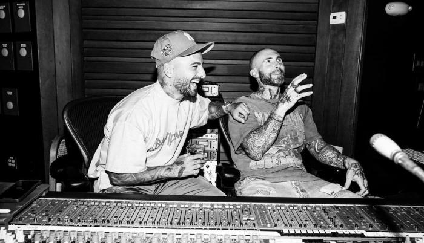

La colaboración más esperada
En una sorprendente alianza musical, los fans de la escena musical están ansiosos por la próxima colaboración entre Biggie Kein y Los Wachiturros. La canción, titulada "Ataraxia", promete ser un fenómeno en las listas de reproducción al fusionar los estilos únicos de estos dos artistas destacados.
"Ataraxia" va más allá de ser simplemente una colaboración entre dos talentos, representa la convergencia de mundos musicales aparentemente opuestos. Biggie Kein, conocido por sus letras ingeniosas y su presencia escénica magnética, se une a Los Wachiturros, quienes son reconocidos por su energía contagiosa y ritmos urbanos irresistibles. Este inesperado encuentro musical se perfila como un hito en la industria, demostrando que la música tiene el poder de trascender fronteras y unir a artistas de diferentes géneros.
Los fanáticos están ansiosos por descubrir cómo se entrelazarán los estilos de Biggie Kein y Los Wachiturros en "Ataraxia". Ambos artistas han mantenido un aura de misterio en torno a la colaboración, generando una expectación creciente entre sus seguidores. La combinación de la habilidad lírica de Biggie Kein con la energía vibrante de Los Wachiturros promete ofrecer una experiencia auditiva única que cautivará a audiencias de todas las edades.
Los detalles sobre la producción de "Ataraxia" han sido cuidadosamente guardados, pero se rumorea que el proceso creativo ha sido una amalgama de ideas frescas y experimentación musical. La canción busca trascender las barreras de género, explorando nuevas sonoridades que desafían las expectativas del público. La noticia de esta colaboración sorpresa ha generado una ola de entusiasmo en las redes sociales, con los fanáticos especulando sobre cómo se manifestará la fusión de estos estilos tan distintivos.
"Ataraxia" no solo representa la unión de dos artistas con estilos distintivos, sino que también simboliza la capacidad de la música para romper esquemas y crear conexiones inesperadas. Esta colaboración inédita promete ser un evento musical que dejará huella en la industria y que será recordado como un hito donde la creatividad y la diversidad artística se unieron para dar vida a algo verdaderamente único.
